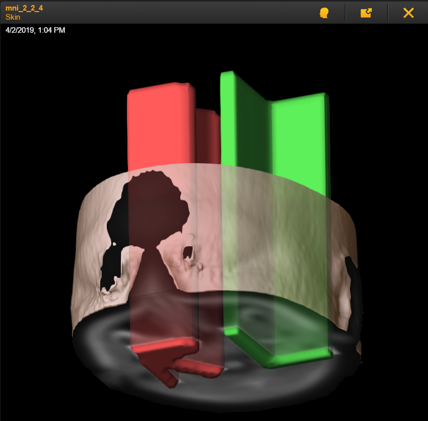
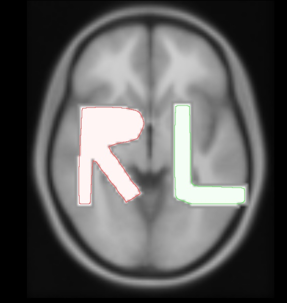
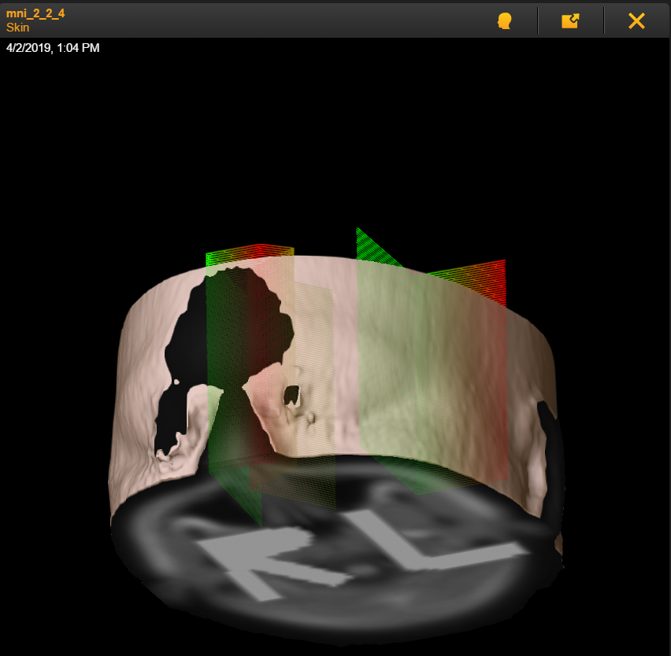
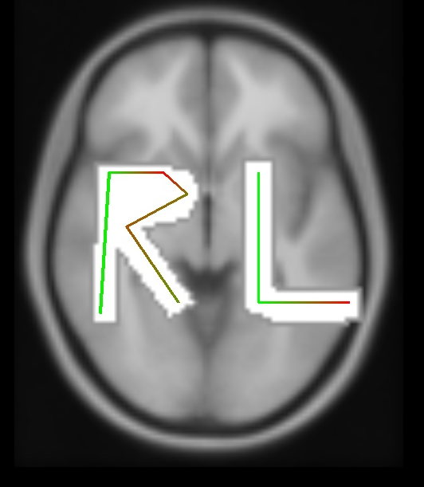
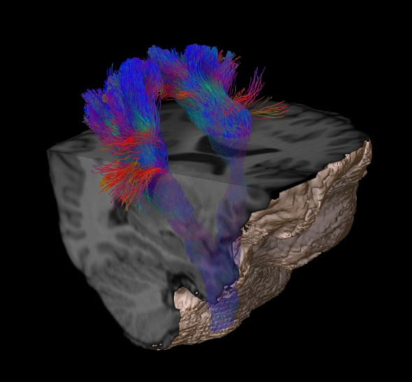

Examples
This section includes some screenshots in order to explain some of the concepts introduced in previous sections.
Label images
Label images converted by Karawun will be rendered as 3D label “objects” by Brainlab. Label images are a good way of representing hand delineated structures (tumours), automatically generated masks (brain structures) or thresholded fMRI maps.
The image below shows a Brainlab rendering of the left/right markers included with the FSL package overlaid on the image from which they were generated.
{kind=link}
The R and L objects were masks with different integer (R=1, L=2) values in the original nifti file.
In a slice view the label objects are displayed as outlines with subtle internal shading
{kind=link}
Tract objects
Tract objects are collections of connected 3D points, also displayable in Brainlab as 3D objects. The image below shows a synthetic tract, generated for validation purposes, shaped to match the letters.
 {kind=link}
{kind=link}
Finally some real tractography results, generated with MRtrix, displayed in Brainlab as a 3D rendering.
{kind=link}